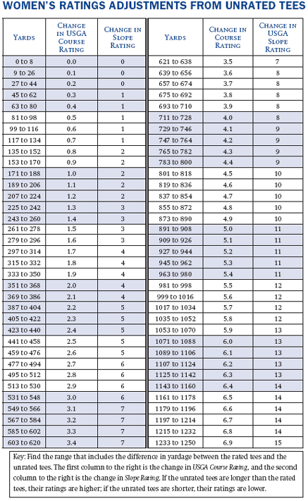
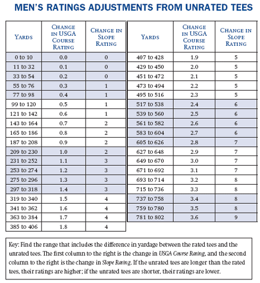

Section 5 SCORES
Definitions
Within each section, all defined terms are in italics and are listed alphabetically in Section 2 - Definitions.
Fair handicapping depends upon full and accurate information regarding a player's potential scoring ability as reflected by a complete scoring record. Every player must be responsible for returning all acceptable scores, as defined in this section. For handicap purposes, all Section 4 adjustments, including Equitable Stroke Control, must be applied to all scores including tournament scores.
 a. Scores To Post
a. Scores To Post
To post a 9-hole score, the player must play 7 to 12 holes, and at least 7 holes must be played in accordance with the principle of the Rules of Golf. To post an 18-hole score, the player must play at least 13 holes in accordance with the principles of the Rules of Golf. (See Decisions 5-1a/3 through 5-1a/5.)
 b. Scores on All Courses
b. Scores on All Courses
Adjusted gross scores from all courses with a USGA Course Rating and Slope Rating made during an active season, both at home and away, must be posted by the player along with the appropriate USGA Course Rating and Slope Rating. (See Decision 5-1b/1.)
 c. Scores in All Forms of Competition
c. Scores in All Forms of Competition
Scores in both match play and stroke play must be posted for handicap purposes. This includes scores made in match play, in multi-ball, or in team competitions in which players have not completed one or more holes or in which players are requested to pick up when out of contention on a hole. (See Decision 5-1c/1 and Section 4.)
 d. Disqualification
d. Disqualification
A player who is disqualified from a competition, but has an acceptable score, must record an adjusted gross score for handicap purposes. For example, a player who is disqualified from a competition for failure to sign a scorecard has an acceptable score for handicap purposes.
 e. Unacceptable Scores
e. Unacceptable Scores
Scores made under the following conditions are not acceptable for handicap purposes and must not be entered in the player's scoring record:
(i) When fewer than seven holes are played;
(ii) When made on a golf course in an area in which an inactive season established by the authorized golf association is in effect;
(iii) When the length of the course is less than 3,000 yards for 18 holes (or less than 1,500 yards for 9 holes);
(iv) When, as a condition of the competition, the maximum number of clubs allowed is less than 14, or types of clubs are limited as, for example, in a competition that allows only iron clubs;
(v) When scores are made on a course with no USGA Course Rating or Slope Rating;
(vi) When a player uses non-conforming clubs, non-conforming balls, or tees;
(vii) With respect to Rule 14-3 (Rules of Golf), when an artificial device or piece of unusual equipment is used during the execution of a stroke or when equipment is used in an unusual manner during the execution of a stroke. (See Decision 5-1e/3.)
 a. General
a. General
Posting scores in person immediately following the round at the course where the round is played is the preferred way to expose scores to peer review. This method of posting must be used whenever possible. The place for returning scores from all courses should be convenient to make it as easy as possible for players to record every round played. The form of reporting is the responsibility of the golf club or the authorized golf association, and will depend upon the procedure adopted by the Handicap Committee. The posted scores for the day must be immediately available to all members for peer review. (See Decision 5-2a/1.)
For handicap purposes, the following information must be returned in person immediately following the round at the course where the round was played or, if that is not possible, as soon as practical prior to the next revision so that a scoring record is up-to-date (See Decision 5-2a/2):
(i) Player's name or identification number;
(ii) Date;
(iii) Course Name*;
(iv) USGA Course Rating and Slope Rating of the course played;
(v) Adjusted gross score;
(vi) Score type for tournament scores or scores posted via the Internet. (See score type.)
The Handicap Committee may adopt a policy to accept scores returned by e-mail, facsimile, Internet, or surface mail. Scores may not be returned verbally by the telephone.
Scores returned to the club by e-mail, facsimile, Internet, or surface mail must be exposed to the same peer review as scores posted in person at the club. If a club adopts a policy to accept scores via e-mail, facsimile, Internet, or surface mail, the Handicap Committee must designate an official at the club who is authorized to receive these scores. If a golf club adopts a policy to accept scores posted via the Internet, the club must also provide the ability to review all scores of all members via the Internet.
Total scores may be returned and need not be recorded hole-by-hole. The Handicap Committee may require the returning or attesting of scorecards periodically in order to assist in its responsibilities, but this requirement must not be used to affect the acceptability of a score. A score is acceptable for handicap posting purposes regardless of whether a scorecard accompanies it. (See Decisions 5-2a/3 and 5-2a/4.)
 b. Posting a Score When a Complete Round is not Played
b. Posting a Score When a Complete Round is not Played
If 13 or more holes are played, the player must post an 18-hole score. If 7 to 12 holes are played, the player must post a nine-hole score. In either case, scores for unplayed holes must be recorded as par plus any handicap strokes that the player is entitled to receive on the unplayed holes. (See Section 4-2 and 5-1a .)
Example: A player with a Course Handicap of 30 stops playing after 16 holes because of darkness. Hole 17 is a par 3 and is the number 18 handicap-stroke hole. The player will record 3 (par) plus 1 handicap stroke for an X-4 on hole 17. Hole 18 is a par 4 and is the number 12 handicap-stroke hole. The player will record 4 (par) plus 2 handicap strokes for an X-6 on hole 18.
 c. Posting Nine-Hole Scores
c. Posting Nine-Hole Scores
To be acceptable for handicap purposes, nine-hole scores must meet the following conditions:
(i) The course must have a nine-hole USGA Course Rating and Slope Rating;
(ii) At least seven holes must be played.
There is no restriction on the number of nine-hole scores posted to a player's scoring record. Even if a player plays a majority of nine-hole rounds, that player can still utilize a Handicap Index (See Section 10-2) rather than a Handicap Index (N). (See Section 10-5 for computation of a Handicap Index (N).) (See Decision 5-2c/1.)
 d. Treatment of Nine-Hole Scores
d. Treatment of Nine-Hole Scores
Once posted, a nine-hole score will be treated as follows:
(i) Nine-hole scores must not be designated as T-Scores;
(ii) When two nine-hole scores are combined, the USGA Course Rating is the sum of each nine-hole USGA Course Rating and the Slope Rating is the average of the Slope Rating of the two nines (if the average is .5, it is rounded upward to the next whole number);
(iii) Two nine-hole scores combined to create an 18-hole score should be designated with the letter C (e.g., 85C). If either of the two nine-hole scores was posted via Internet (See Section 5-2a(vi)), the score should be designated CI;
(iv) Nine-hole scores are combined in the order that they are received into the player's scoring record from any club or from any combination of nines, regardless of score type. For example, a front nine middle tee score could combine with a front nine back tee score made from any course.
An 18-hole score created by the combination of two nine-hole scores will display the date and course name (if applicable) of the latest nine hole score (e.g., April 29 and May 4 = May 4).
A nine-hole score will be retained for combination with another nine-hole score until it is older than the twentieth oldest eighteen-hole score in the scoring record. Nine-hole scores will be combined in the order they are received in the player's record, and not necessarily by date.
 e. Posting a Tournament Score
e. Posting a Tournament Score
A tournament score is a score made in a competition organized and conducted by a Committee in charge of the competition. The competition must identify a winner(s) based on a stipulated round(s), and must be played under the principles of the Rules of Golf.
The Committee (preferably the Handicap Committee, in consultation with the Committee in charge of the competition) must determine in advance if these conditions are met, and announce in advance whether the score must be identified by the letter "T" when posted. Routine events such as regular play days normally are not to be designated as T-scores because they are not significant in the traditions, schedules, formats, and membership of the club.
 f. Committee Posting a Score For a Player
f. Committee Posting a Score For a Player
If a player fails to post a score, the Handicap Committee may post the score without the player's authorization. (See Section 8-4b.) In a competition, the Committee in charge of the competition may post the scores of all competitors. The Committee must notify the players that it will post the scores in order to prevent scores from being posted by both the players and the Committee.
 g. Posting a Score from an Unrated Set of Tees on a Rated Course
g. Posting a Score from an Unrated Set of Tees on a Rated Course
Authorized golf associations issue a USGA Course Rating and Slope Rating for the most commonly played sets of tees. If a USGA Course Rating and Slope Rating from a selected set of tees are not available for the appropriate gender, the player may apply the following procedure on a temporary basis:
• Locate the nearest set of rated tees for the appropriate gender;
• Determine the yardage difference between the set of tees being played and the rated set of tees;
• Using the following table, find the range that includes the yardage difference;
|  |
|  |
Add the resulting table values if the unrated tees are longer than the rated tees, or subtract the resulting values if the unrated tees are shorter than the rated tees.
This method may also be used if a player plays a combination of tees. The player first determines the total yardage played then applies the above procedure.
If the Committee in charge of a competition has used a combination of tees for a competition course, this procedure may be used. This procedure is not a substitute for a formal USGA Course Rating and Slope Rating.
For a nine-hole adjustment, the proper procedure is to use the actual yardage difference for the adjustment to the USGA Course Rating, and double the yardage difference to find the appropriate Slope Rating adjustment.
Example 1: A woman plays from the middle tees, which are not rated for women. The women's USGA Course Rating from the forward tees is 71.6, with a Slope Rating of 119. The middle tees are 396 yards longer than the forward tees. She enters the 387 to 404 yard range, which corresponds to adding 2.2 to the USGA Course Rating and 5 to the Slope Rating of the forward tees. She will post her score with a USGA Course Rating of 73.8 (71.6 + 2.2) and a Slope Rating of 124 (119 + 5).
Example 2: A man plays nine holes from the forward tees, which are not rated for men. The men's nine-hole USGA Course Rating from the middle tees is 34.8, with a Slope Rating of 117. The forward tees are 195 yards shorter than the middle tees. He enters the 187 to 208 yard range to subtract 0.9 from the USGA Course Rating and the 385 to 406 yard range
(195 x 2 = 390) to subtract four from the Slope Rating of the middle tees.
He will post his score with a USGA Course Rating of 33.9 (34.8 - 0.9) and a Slope Rating of 113 (117 - 4).
Note 1 : If a player plays a course which does not have the necessary men's or women's USGA Course Rating and Slope Rating, the player should notify the authorized golf association that has jurisdiction in that area.
Note 2 : If the yardage difference is more than 1,250 yards for women or 802 yards for men, the player finds one-half of the yardage difference on the table, doubles the corresponding numbers, and applies the procedure above. For example, if a man finds a yardage difference of 1,400 yards, he doubles the values for 700 yards from the table, and adds 6.4 (3.2 x 2) to the USGA Course Rating and 16 (8 x 2) to the Slope Rating.